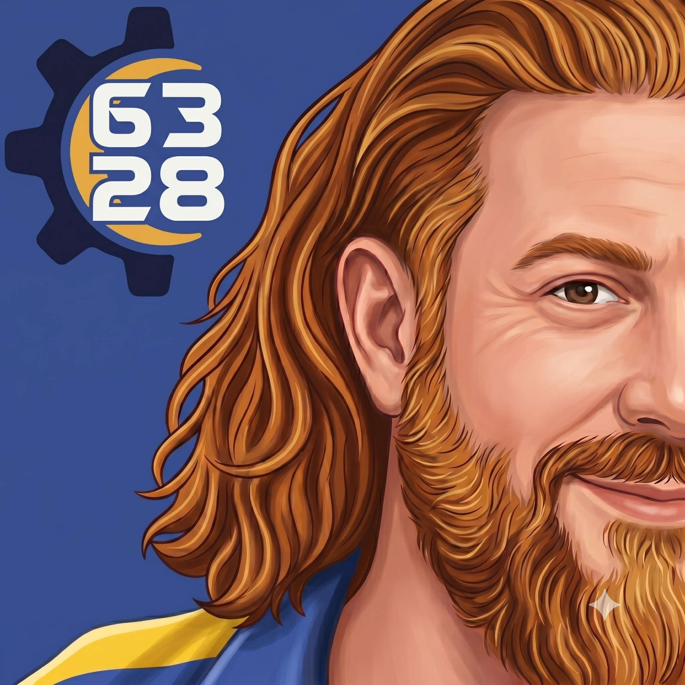
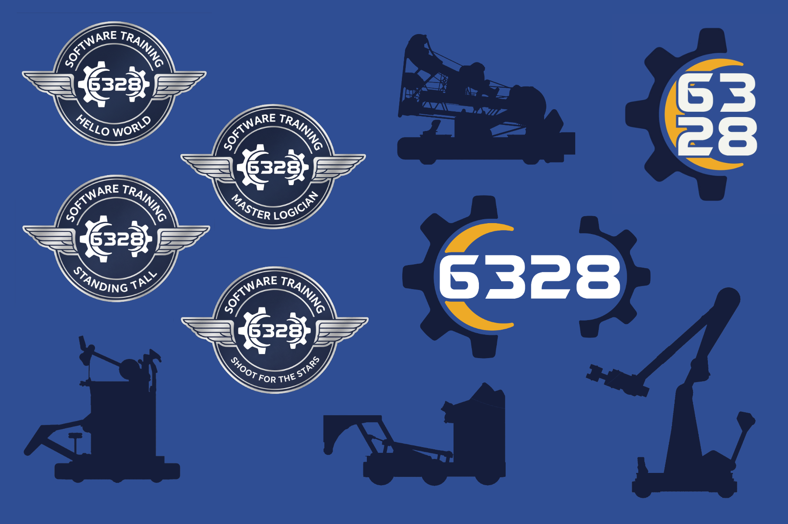
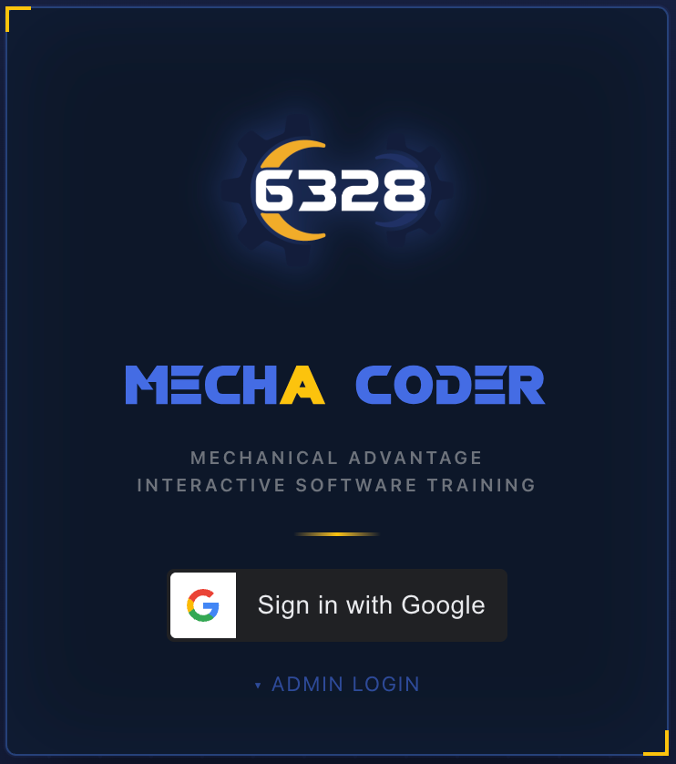
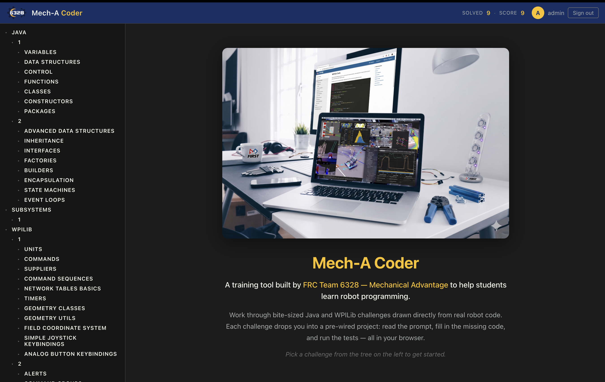
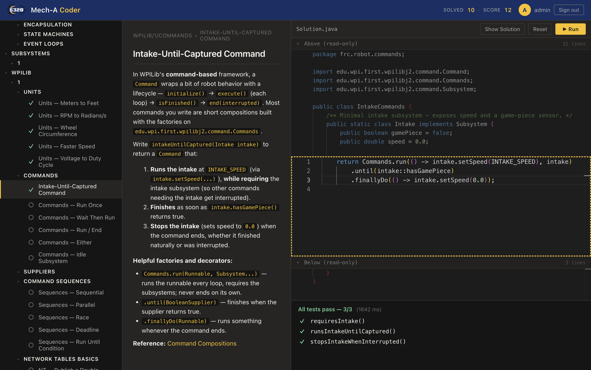
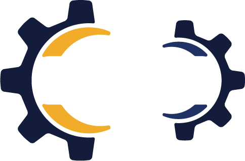

What I learned mentoring software, what I built,
and what I'd tell myself on day one.


Browser-based FRC Java training — CodingBat with robot context.
Open source by Team 6328 · Mechanical Advantage.



Show up. Say yes sometimes when every instinct says no.
Trust that your students will surprise you.
